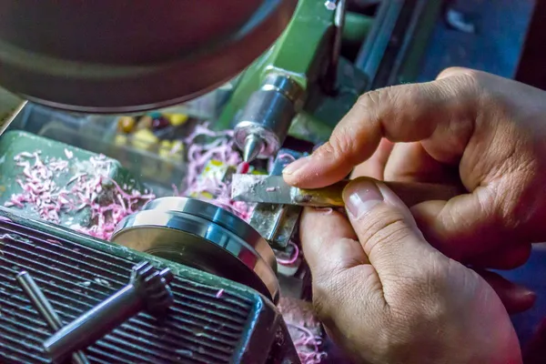
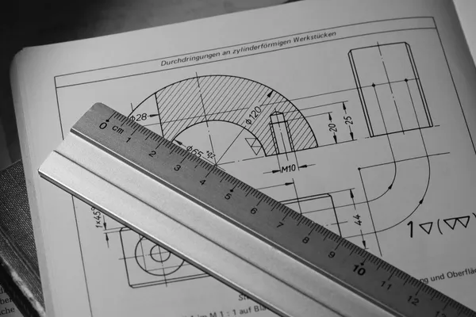
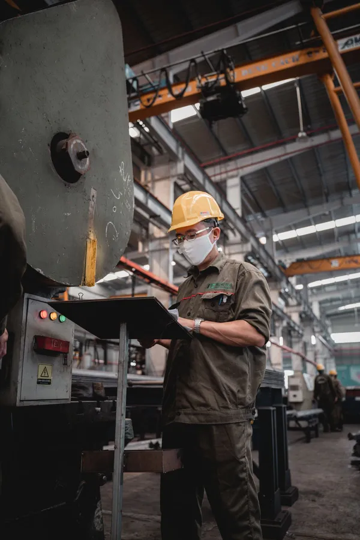

01 Cutting
精密切削加工
CNC 旋盤 12台、マシニングセンタ 8台、複合加工機 3台で、丸物・角物を問わず金属部品を加工します。複雑な形状も、工程をまとめて段取り替えを減らすことで、精度とコストを両立します。
- 対応サイズ
- 旋盤 φ3〜φ300mm ／ マシニング 600×400mm まで
- 加工精度
- ±0.005mm（形状・材質によります）

01 Cutting
CNC 旋盤 12台、マシニングセンタ 8台、複合加工機 3台で、丸物・角物を問わず金属部品を加工します。複雑な形状も、工程をまとめて段取り替えを減らすことで、精度とコストを両立します。

02 Prototype
図面が固まる前の段階からご相談いただけます。「この形は削れるか」「もっと安く作れる形はないか」といったご質問に、加工する側の目線でお答えします。

03 Inspection
加工した部品のユニット組立から、温度管理された検査室での測定まで社内で行います。三次元測定機による全数検査、検査成績書の添付にも対応します。
Flow
Materials
| ステンレス | SUS303、SUS304、SUS316L、SUS440C |
|---|---|
| アルミ | A2017、A5052、A6061、A7075 |
| 鉄 | SS400、S45C、SCM435、SKD11 |
| 銅・真鍮 | C1100、C3604 |
| 樹脂 | POM、PEEK、MCナイロン |
Facility
| CNC 旋盤 | 12台（最大加工径 φ300mm） |
|---|---|
| マシニングセンタ | 8台（うち5軸 1台、2026年導入） |
| 複合加工機 | 3台 |
| 三次元測定機 | 2台（温度管理された検査室に設置） |
| その他 | 表面粗さ測定機、画像測定機、ワイヤーカット放電加工機 |